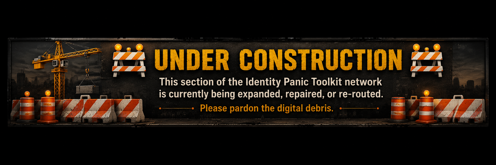
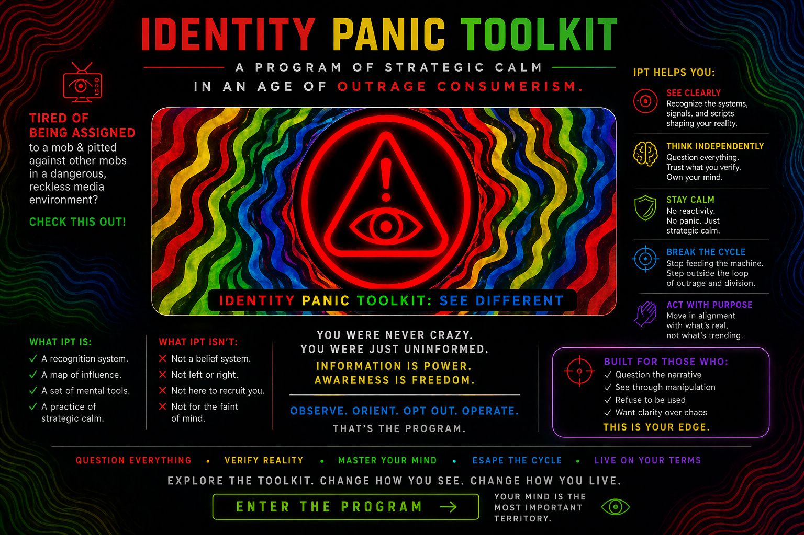
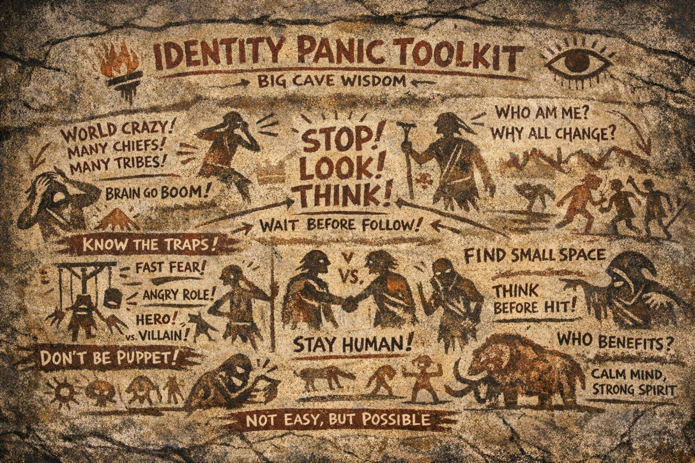

A field manual for noticing when identity, fear, and reaction speed are being pushed faster than thought.
IMPORTANT TO NOTE: Identity Panic Toolkit (IPT) is an independent philosophical and observational framework exploring social behavior, identity dynamics, and modern media environments. IPT is not a licensed psychological, psychiatric, medical, legal, or clinical service, and its materials should not be interpreted as professional advice, diagnosis, or treatment.
⚠️ DISCLAIMER:
Identity Panic Toolkit (IPT) is an independent awareness framework and creative educational project.
It is not affiliated with any official psychological, psychiatric, governmental, or medical institution.
IPT does not provide diagnosis, treatment, therapy, crisis services, or professional mental health advice.
The material presented is intended for reflection, discussion, media literacy, and personal observation.
If you are experiencing a mental health crisis or need professional support, please contact a licensed mental health professional or emergency services in your area.
IPT WILL NOT BE RESPONSIBLE IF YOU DON'T READ THE DISCLAIMER: ULTIMATE DISCLAIMER

CLICK ON THE IMAGE BELOW FOR THE SIMPLE OVERVIEW OF IPT PROGRAM

This is the index of the IPT (Identity Panic Toolkit), a public-domain awareness framework designed to help people recognize how identity, fear, social pressure, outrage, narrative velocity, and group behavior influence human perception and reaction. IPT is not a belief system, political faction, religion, recruitment project, or ideological movement. It does not tell people what to think, who to hate, or what side to join. Instead, it functions as a field manual for observing the psychological and social mechanisms that shape modern behavior in real time. The framework explores concepts such as identity panic, role assignment, outrage escalation, audience capture, parasocial influence, narrative gravity, symbolic pressure, fear amplification, and de-escalation awareness. IPT combines analytical writing, diagrams, field briefings, surreal humor, symbolic imagery, experimental media, and observational philosophy into an open exploration of how humans react under conditions of informational overload and social acceleration. The goal is not obedience or conformity, but increased awareness, reflection, psychological flexibility, and the restoration of conscious choice before emotional absorption fully takes hold.
Click a page below; go ahead and explore...
"pick a card; any caard!" Click the image below to enter the code testing grounds, a live-development zone...Public observation is permitted. 👁️💻

There's more IPT stuff here. To find it, just keep exploring! Check out the list below: